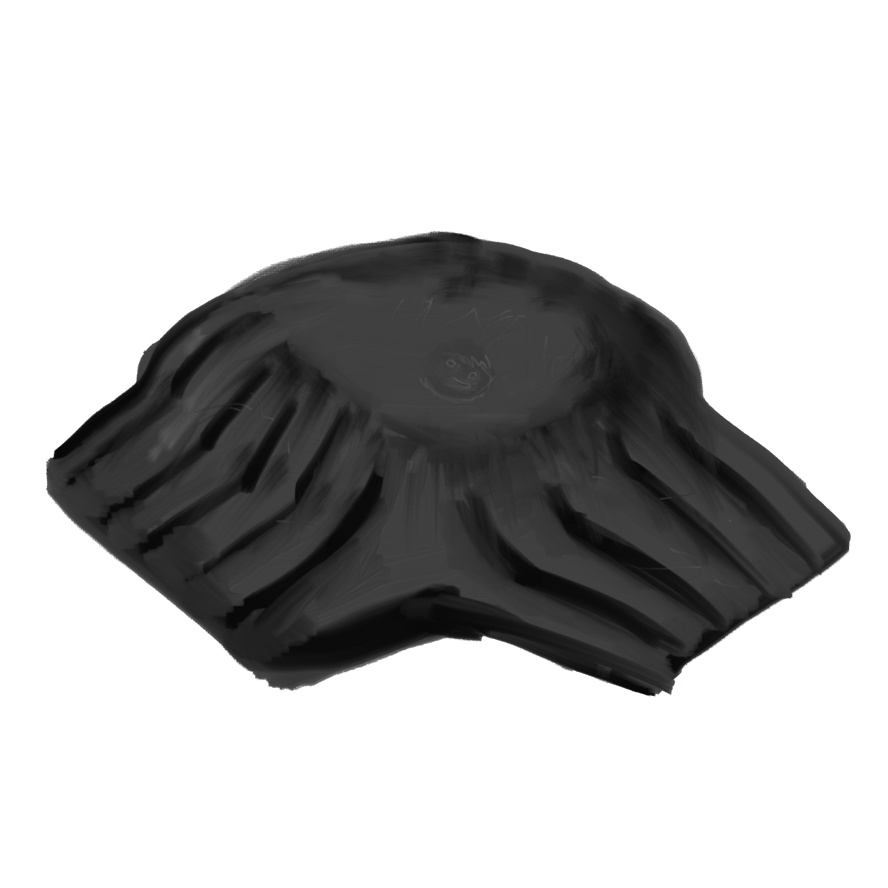

A plastic bowl from a package of instant noodles, flattened almost beyond recognition. I knew what it was from the familiar brand logo still visible in raised plastic in the middle of the circle. If you squint, its a crafty little cast iron shield. Is that a thing? If not, perhaps a baseball type hat, with a visor split in two.
